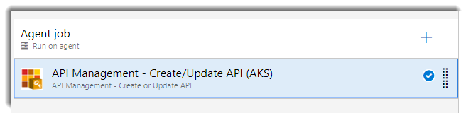

DISCLAIMER: I’m assuming you are familiar with Kubernetes, well in this post we are not going to explain it. So if you are not familiar, I recommend you to visit the official documentation.
If you have read my previous post you’ll know that currently I’m building a microservices architecture using Azure Kubernetes Service (AKS). The context here is that we have a set of microservices that exposes API endpoints and we need a solution for publishing APIs to external and internal customers and clients applications, so we don´t want customers and client applications access directly to these microservices. We are talking to production ready API, so we have to take some considerations:
- Single entry point (Gateway)
- Usage
- Analytics
- Monitoring
- Cache
- Throttling
- Authorization
- And much more…
For these reasons we have decided to use Azure Api Management. Api Management provides us a way to expose all APIs behind a single static IP and domain using a suscription key.
Accessing services running on the cluster
To use a REST service that is deployed on Kubernetes, you need to define a service. There are several kinds of services:
- ClusterIP
- NodePort
- LoadBalacer
ClusterIP
A ClusterIP is the default service in Kubernetes. Expose the service on a cluster-internal IP, so if you choose this kind of service it will be only reachable within the Kubernetes cluster so Azure API Management won’t be able to access.
NodePort
Another option is to use a NodePort, Kubernetes will open a static port on each node (VM) of the cluster so you’ll be able to contact the NodePort outside the cluster using NodeIP:NodePort. The problem when using NodePort is that you are accesing directly to the node (VM), so if your Node/VM IP changed, you’ll need to deal with it. It’s not the recommended way to expose services in production.
LoadBalancer
This is the standard way to expose your services to the outside world from a Kubernetes cluster. This service type will leverage the cloud provider to provision and configure the load balancer. In Azure, this will provision an Azure Load Balancer configuring all the things related with it.
The problem with this type of service is by default provision a Public Azure Load Balancer and we don’t want to expose our APIs publicly, we want to expose them through Azure Api Management. However we can also provision an Internal Load Balancer to expose our APIs internally in Azure, so it seems to fit with our requirements not to expose our services publicly.
To create an Internal Load Balancer, create a service manifest with the service type LoadBalancer and the azure-load-balancer-internal annotation as shown in the following code:
apiVersion: v1
kind: Service
metadata:
name: todo-app-service
annotations:
service.beta.kubernetes.io/azure-load-balancer-internal: "true"
spec:
type: LoadBalancer
ports:
- port: 80
selector:
app: todo-app
Once we have applied the manifest in our AKS cluster, we should see EXTERNAL-IP that belongs to same subnet of the cluster nodes:
kubectl get services
NAME TYPE CLUSTER-IP EXTERNAL-IP PORT(S) AGE
todo-app-service LoadBalancer 10.0.190.54 10.240.0.6 80:31269/TCP 4d
Connect Azure Api Management to your AKS cluster
When we create an AKS cluster in Azure, the process creates another resource group as shown in the following image:
This by design, this second resource group is a “cluster resource group” and is used to represent all the resources that belong to the cluster: VMs, Virtual Network…
Within the virtual network there are a number of VMs (Nodes) usually one master and a few agents (depends on the size of your cluster). We can connect Azure Api Management to this subnet in order to be able to consume the services within the cluster. To connect our Azure Api Management to our AKS cluster we need to create a subnet within this virtual network:
You can use a small range of IPs (In our case 3 directions is enough)
Once we have created our subnet, go to your Azure Api Management instance in the Azure portal and configure the virtual network. Mark the Virtual network as External.
Select your AKS virtual network and the subnet that we have created previously:
Save your changes, take it easy and relax because Azure Api Management will take 15/30 minutes to apply these changes :)
Import and publish our services in Azure Api Management
Now that we have to service listening within the virtual network, it’s time to import and publish in our Azure Api Management. In my case, I’ve configured my API to generate an OpenApi specification using a library called Swashbuckle. It analyzes your API and generates an OpenApi specification that allows us to import from the Azure Portal using the next url:
http://EXTERNAL-IP/swagger/v1/swagger.json
But Azure Api Management can’t reach our service beceause is not a public url and therefore can’t be imported:
The right way to resolve it is using a CD pipeline as I wrote in this post. Once you have created your CD pipeline, create a new release and the API should be imported:


Now we can test it:
Conclusion
The purpose of the post is to show you how to connect Azure services such as Azure Api Management to your AKS cluster in order to manage the access to your services in a more convinient way and take advantage of all the benefits of using an Api Management in your microservices architecture.


Comments